Homes we've designed and built.
Browse by project type or location. Every project links to the full story, including the budget range and what we'd do differently.
8 projects · 2022–2026 · Orange marks each house's key idea
-
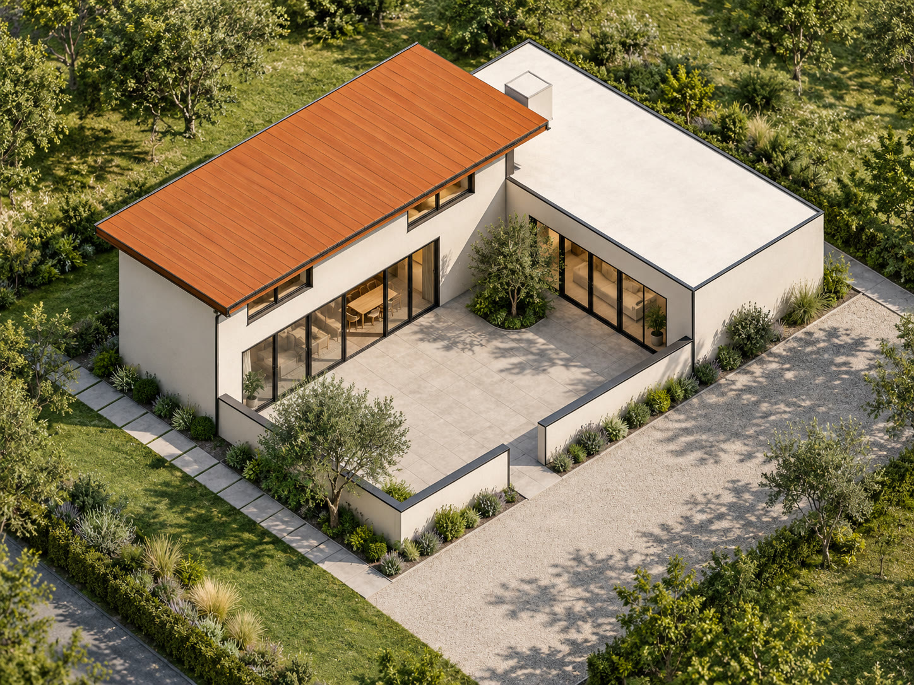
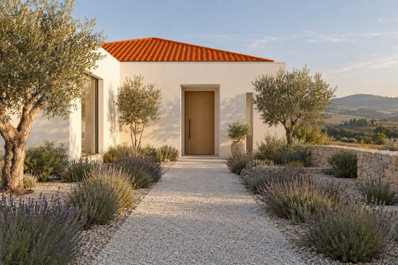
From the ground2403Court House
Lewes, East Sussex New build 212 m² Completed 2025Key ideaRooms gathered around a court, so every one of them gets the sun.
Read the case study -
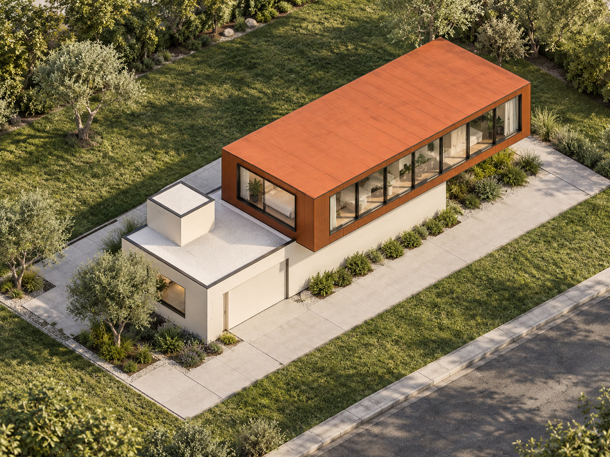
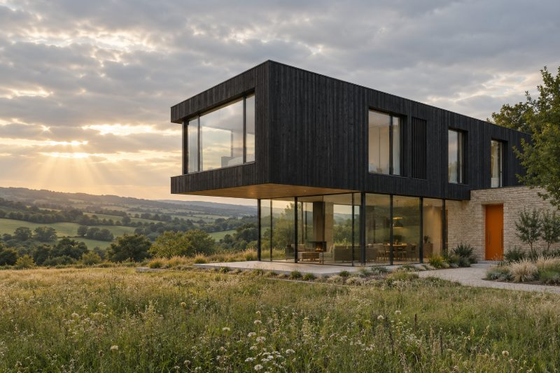
From the ground2305Long Reach
Frome, Somerset New build 186 m² Completed 2024Key ideaAn upper floor that reaches past the house below, toward the view.
View project -
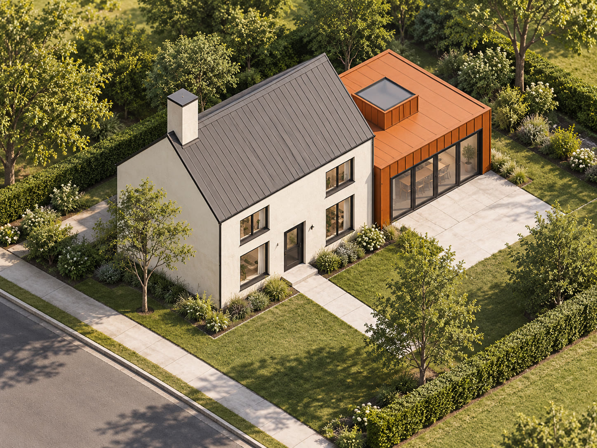
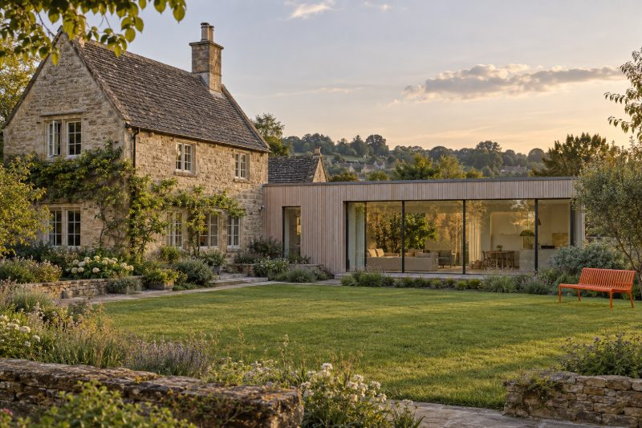
From the ground2302Mill Lane
Stroud, Gloucestershire Remodel 164 m² Completed 2024Key ideaA low garden wing, so the old house could stay as it was.
View project -
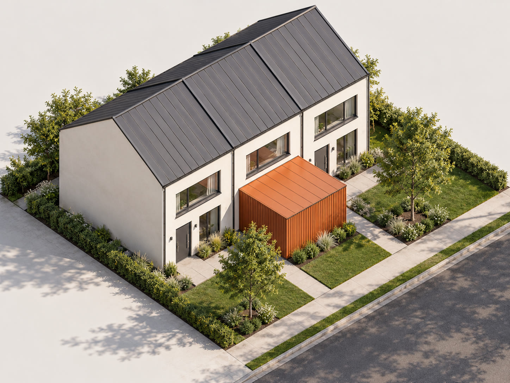
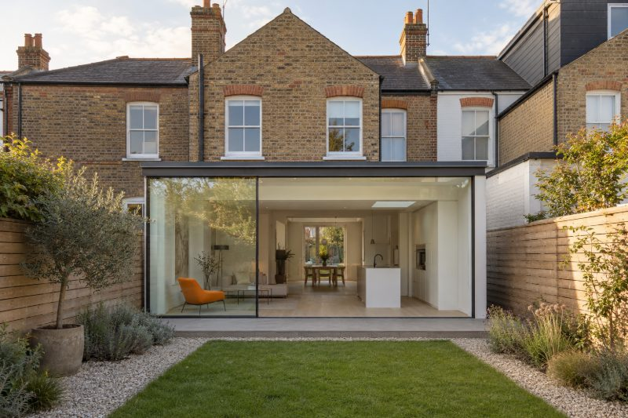
From the ground220714 Albert Terrace
Whitstable, Kent Extension 38 m² added Completed 2023Key ideaA glass room that turns a terrace house toward its garden.
View project -
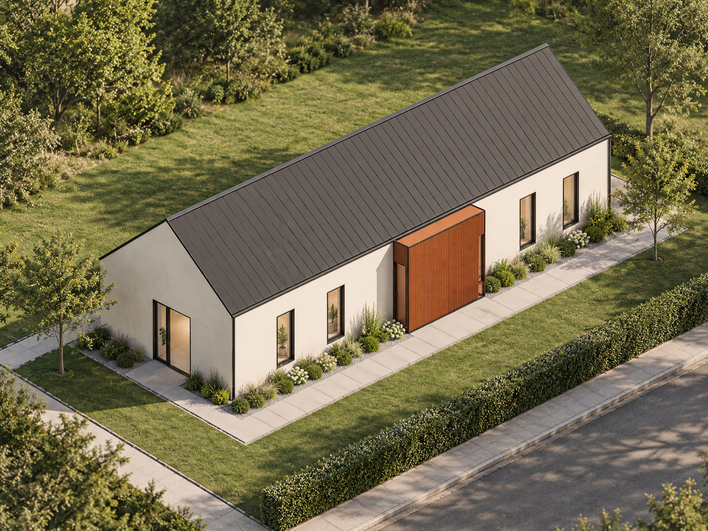
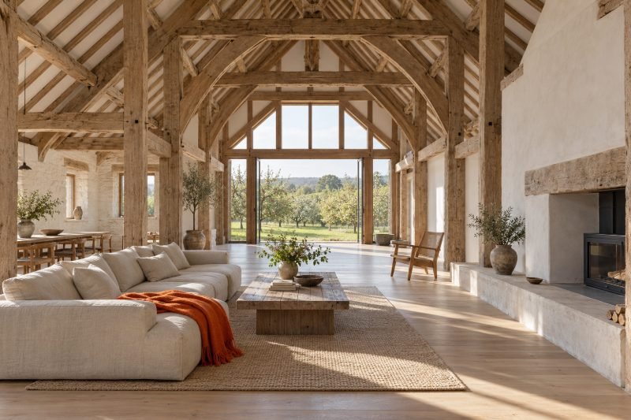
From the ground2204Orchard Barn
Ledbury, Herefordshire Remodel 240 m² Completed 2023Key ideaOne long room under the old roof, with the oak frame left on show.
View project -
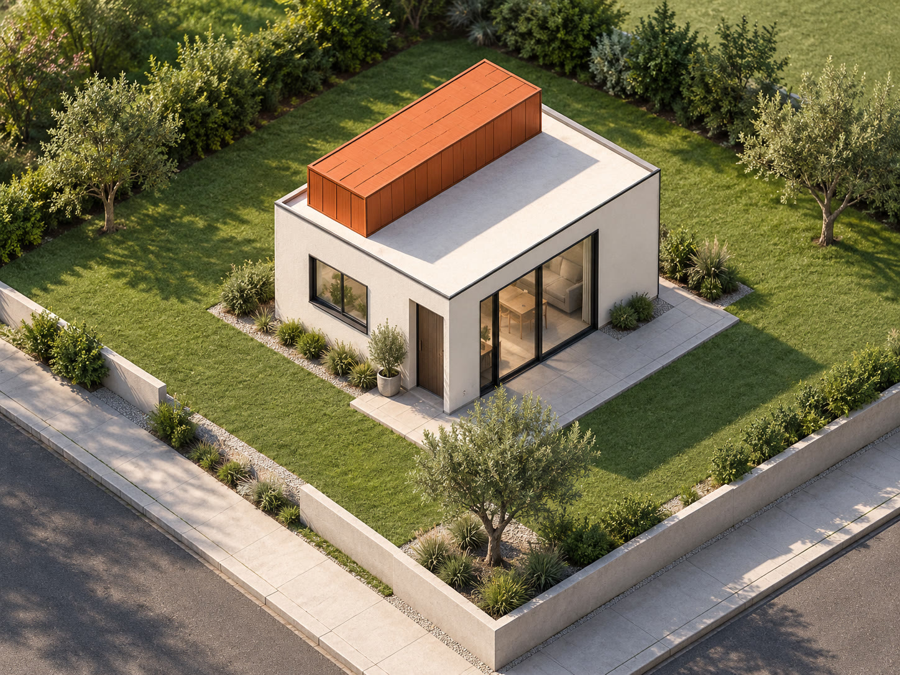
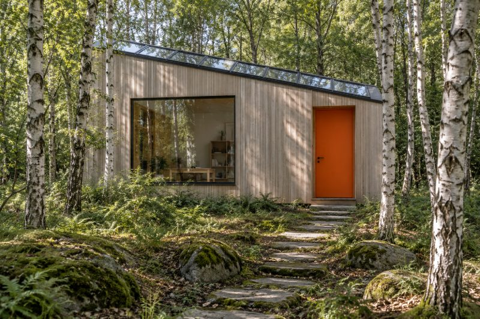
From the ground2203Ashdown Studio
Forest Row, East Sussex New build 32 m² Completed 2022Key ideaA garden studio lit from the north, so the light stays even all day.
View project -
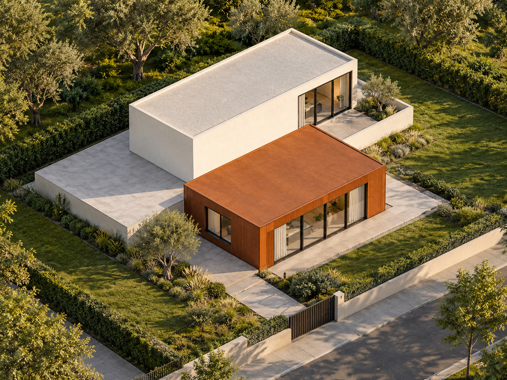
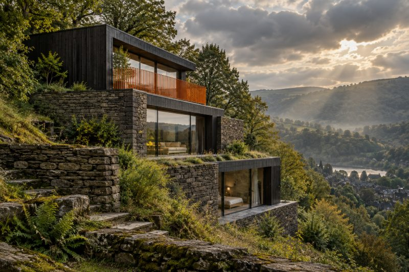
From the ground2109Hollow Way
Hebden Bridge, West Yorkshire New build 158 m² Completed 2022Key ideaA house stepped down the slope, so no room sits below ground.
View project -
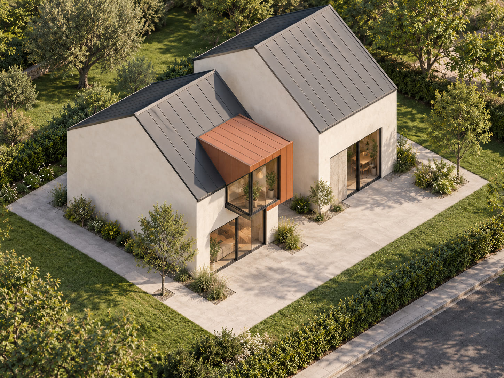
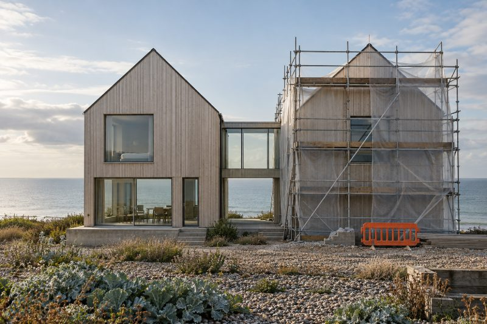
From the ground In progress · Visualisation2501Sea Lane
Hastings, East Sussex New build 198 m² On site · handover 2026Key ideaTwo gables facing the sea, joined by a glass link.
View project
No projects match yet. Clear the filter, or tell us what you're planning and we'll show you the closest work.